Author: vadim@fwbuilder.org
http://www.fwbuilder.org
| Revision 1.0 Author: vadim@fwbuilder.org http://www.fwbuilder.org |
This article continues the series of articles on Fireall Builder, a graphical firewall configuration and management tool that supports many Open Source firewall platforms as well as Cisco IOS access lists and Cisco ASA (PIX). Firewall Builder was introduced earlier with article Getting Started With Firewall Builder. The series continued with articles on built-in policy importer and other topics.
More information on Firewall Builder, pre-built binary packages and source code, documentation and Firewall Builder Cookbook can be found on the project web site at www.fwbuilder.org. Watch Project Blog for announcements and articles on all aspects of using Firewall Builder.
This article demonstrates one of the more advanced features of Firewall Builder - built-in Revision Control System (RCS).
Firewall Builder GUI has built-in revision control system that can be used to keep track of changes in the objects and policy rules. If data file has been added to the revision control system, every time it is saved, the system asks the user to enter a comment that describes changes done in the file in this session and stores it along with the data. The program also assigns new revision number to the data file using standard software versioning system whith major and minor version numbers separated by a dot. When you open this data file next time, the program presents a list of revisions alnogside with dates and comments, letting you choose which revision you want to use. You can open the latest revision and continue working with the file from the point where you left off last time, or open one of the older revisions to inspect how the configuration looked like in the past and possibly create a branch in the revision control system. Here we take a closer look at the built-in revision control system.
We start with a regular data file which we open in the Firewall Builder GUI as usual. Note that the name of the file appears in the titlebar of the main window, here it is [test2.fwb]:
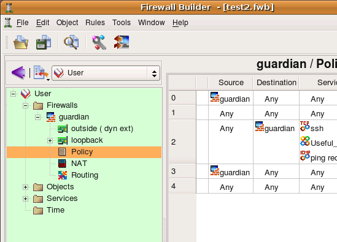You can always see additional information about the file using main menu File/Properties. There is not much the program can report about this file that we do not know already. It shows full path where it is located on the file system and the date and time of last modification, but otherwise since it has not been added to the revision control system, there is no additional information it can report.
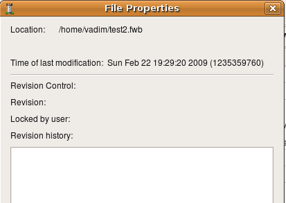To start tracking revisions of this data file, use menu File/Add File to RCS, the program creates all necessary files and reports result in a pop-up dialog. If for some reason adding file to the revision control has failed, the program reports error in the same pop-up dialog. Firewall Builder FAQ "Using RCS" has a list of typical problems that may occur at this point.
| 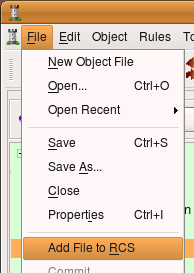 | 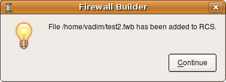 |
Few things have changed in the GUI after the file has been added to the revision control system. First, besides its name the titlebar now shows its revision. Inital revision number after the file has just been added to the revision control is 1.1.
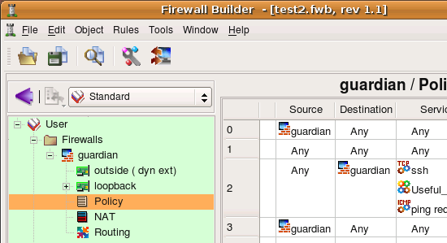The File/Properties dialog shows that the file is now being tracked by revision control system and its current revision is 1.1. There is only one revision in the history and the comment is "Initial revision" which is added automatically by the program.
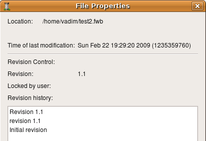Let's see how revision control system keeps track of the changes done in the data file. To demonstrate this, I am going to make a change in one of the objects, save the data file and check it (this creates new revision), then I'll close it and open it again, first the latest revision where the change is present, and then previous revision where the change is absent.
Here is the rule set of this firewall I have started with, it is very simple and consists of just 5 rules:
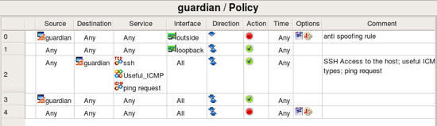Now I added one more rule (to permit HTTP to the firewall). This is rule #3, it is colored yellow:
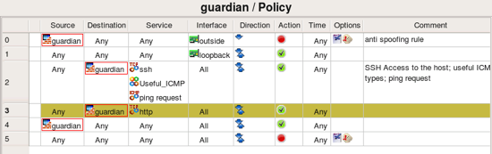Now I save ths file using menu File/Save and exit the program. Before I can do that, however, the program tries to check the file in to the RCS and presents a dialog where I can add a comment to document the change I made. I enter the comment and press Check file in button to complete operation. The file is now checked in and the program exits.
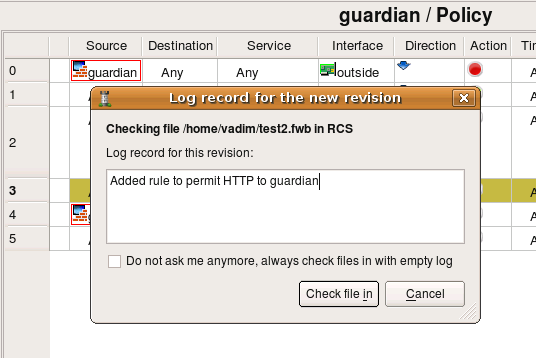Now I restart the program and try to open the same file using File/Open. Since the file is now in RCS, the program presents the dialog with the list of its revisions. Each revision has a comment associated with it, shown at the bottom of the dialog. Note also that each revision also shows the user name of the user who checked it in which is very useful in a multi-user environment.
| 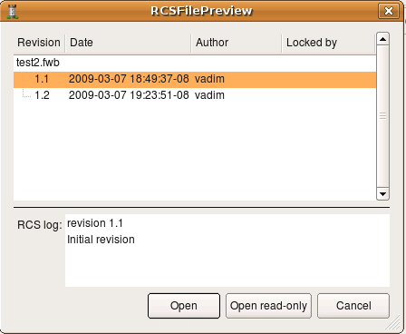 | 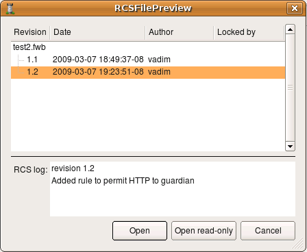 |
If I choose revision 1.2 (the latest) and open the file using button Open, I get my rules including rule that permits HTTP to the firewall:
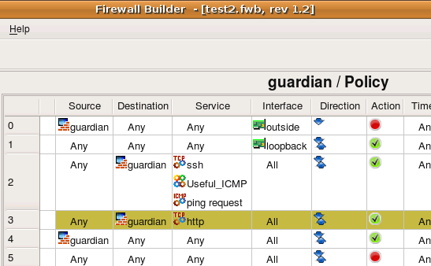If I choose revision 1.1 and open the file, I get the policy that looks like this (note revision number in the main window titlebar, it is 1.1):
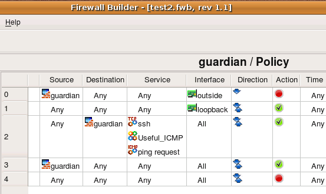The rule to permit HTTP to the firewall is not there because I opened old revision of the data file. Essentially, I rolled back the change I made in rev 1.2. If I only wanted to look how rules looked like in rev 1.1, then I can now just close the file and open its latest revision to continue working with it. I can not only just look at the rules in the old revision, I can compile them and install on the firewall if that is what I need to do. Note that this can break things if some protocols were added to the firewall rules later, but this can be useful if you need to test things as they were few days ago.
However if I want to roll back the change and continue without it, all I need to do is make the change in this revision (1.1) and then save and check it in. This will create a branch in RCS and I will be able to continue working with it later. The previous change, checked in as rev 1.2 will always be there though and I will always be able to revert to it if I want. The program does not merge branches, merging changes in XML files is a complex task and is not implemented at this time.
To illustrate creation of a branch, I am making a change to the revision 1.1 of the data file as shown on the next screenshot:
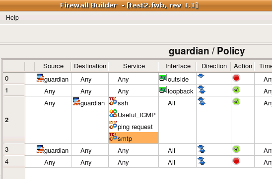I then save and check this file in with appropriate comment. To check it in I use menu File/Commit. I then close the file using File/Close and reopen it again using File/Open. This acoomplishes the same operation as in the example above in this document, except I do not close the program. When I try to open it, the program shows the branch and new revision 1.1.1.1 that I just created. Note that the time of the revision 1.1.1.1 is later than the time of revision 1.2:
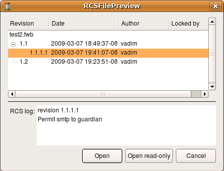Now if I open rev 1.1.1.1 and continue working with and check new changes in, the program will create revision 1.1.1.2 and so on.
This document demonstrates how built-in revision control system (RCS) in Firewall Builder GUI can be used to document changes in the file. It can also be used to roll back changes to previous revision both temporary or permanently. Using RCS helps establish accountability if several administrators can make changes to the policy of firewalls because RCS keeps track of the user name of user who checked changes in. RCS in Firewall Builder works on all supported OS, that is Linux, FreeBSD, OpenBSD, Windows and Mac OS X. On Linux, *BSD and Mac OS X it relies on system-wide installed rcs package, while on Windows rcs tools are installed as part of the Firewall Builder package. In general, I recommend always using RCS even in simple cases when only one administrator uses the tool. Ability to document changes and roll back if necessary are great advantages that help a lot to improve the process of security policy management.